Druida
O Druida é um conjurador de magias com forte vínculo com a natureza, capaz de se transformar em animais e invocar os elementos. Sua conexão com o mundo natural lhe confere poderes místicos e habilidades únicas.
Características e Status do Druida: Os Druidas têm como característica principal a Sabedoria (WIS) , que influencia a eficácia de suas magias. Eles possuem a habilidade de se transformar em animais através da "Forma Selvagem" e têm um amplo leque de magias de cura, controle dos elementos e proteção ambiental. Além disso, podem se comunicar com animais e plantas, demonstrando sua profunda conexão com a natureza.
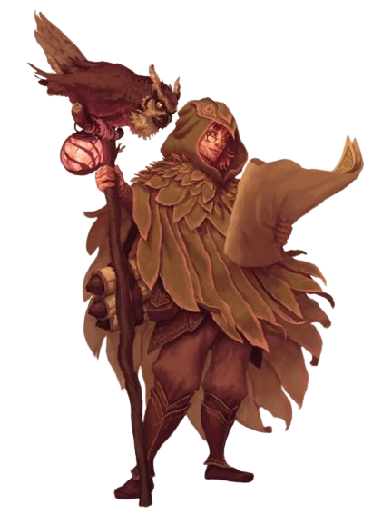Dado de Vida: 1d8 por nível de druida
Pontos de Vida no 1° Nível: 8 + seu modificador de Constituição
Pontos de Vida nos Níveis Seguintes: 1d8 (ou 5) + seu modificador de Constituição por nível de druida após o 1°.
Armaduras: Armaduras leves, armaduras médias, escudos (druidas não irão vestir armaduras ou usar escudos feitos de metal)
Armas: Clavas, adagas, dardos, azagaias, maças, bordões, cimitarras, foices, fundas e lanças.
Ferramentas: Kit de herbalismo
Testes de Resistência: Inteligência, Sabedoria
Perícias: Escolha duas dentre Arcanismo, Adestrar Animais, Intuição, Medicina, Natureza, Percepção, Religião e Sobrevivência
Você começa com o seguinte equipamento, além do equipamento concedido pelo seu antecedente:
- (a) um escudo de madeira ou (b) qualquer arma simples
- (a) uma cimitarra ou (b) qualquer arma corpo-a-corpo simples
- (a) um pacote de estudioso ou (b) um pacote de explorador
- Armadura de couro, um pacote de aventureiro e um foco druídico
Mago
O Mago é uma classe de Dungeons & Dragons especializada em magia arcana. Com seu vasto conhecimento e habilidades mágicas, o Mago é capaz de lançar uma ampla variedade de feitiços poderosos. Com sua inteligência afiada e dominio dos elementos, eles são capazes de manipular a realidade e enfrentar desafios de maneiras únicas e surpreendentes.
Características e Status do Mago: O Mago em Dungeons & Dragons é um mestre da magia, com foco em Inteligência (INT) . Eles possuem um vasto repertório de feitiços e podem conjurar Familiars. Embora tenham poucos pontos de vida, sua sabedoria e agilidade compensam sua fragilidade física. Os Magos podem dominar escolas de magia específicas e se destacam em áreas como Evocação, Ilusão ou Necromancia .
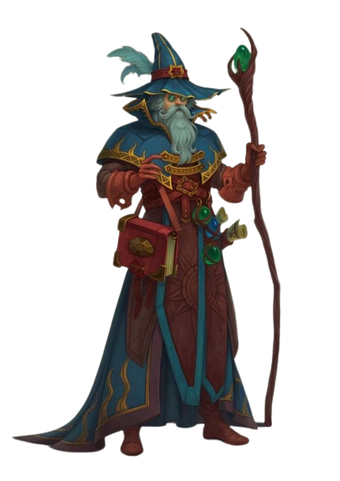Dado de Vida: 1d6 por nível de mago
Pontos de Vida no 1° Nível: 6 + seu modificador de Constituição
Pontos de Vida nos Níveis Seguintes: 1d6 (ou 4) + seu modificador de Constituição por nível de mago após o 1°
Armaduras: Nenhuma
Armas: Adagas, dardos, fundas, bordões, bestas leves
Ferramentas: Nenhuma
Testes de Resistência: Inteligência, Sabedoria
Perícias: Escolha duas entre Arcanismo, História, Intuição, Investigação, Medicina e Religião
Você começa com o seguinte equipamento, além do equipamento concedido pelo seu antecedente:
- (a) um bordão ou (b) uma adaga
- (a) uma bolsa de componentes ou (b) um foco arcano
- (a) um pacote de estudioso ou (b) um pacote de explorador
- Um grimório
Guerreiro
O Guerreiro é uma classe versátil e habilidosa em Dungeons & Dragons, especializada em combate físico e armas. Com sua força e habilidades marciais, o Guerreiro é um verdadeiro especialista em enfrentar desafios de frente.
Características e Status do Guerreiro: O Guerreiro em Dungeons & Dragons é um especialista em combate físico, com alta Força e resistência. Sua Força (FOR) , frequentemente destacada como seu atributo mais usado, permite que eles causem danos significativos aos inimigos. Com proficiência em uma variedade de armas e armaduras , os Guerreiros são líderes na linha de frente, capazes de suportar ataques e proteger seus aliados.
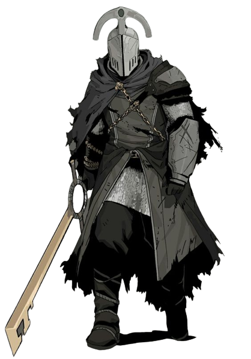Dado de Vida: 1d10 por nível de guerreiro
Pontos de Vida no 1° Nível: 10 + seu modificador de Constituição
Pontos de Vida nos Níveis Seguintes: 1d10 (ou 6) + seu modificador de Constituição por nível de guerreiro após o 1°
Armaduras: Todas as armaduras, escudos
Armas: Armas simples, armas marciais
Ferramentas: Nenhuma
Testes de Resistência: Força, Constituição
Perícias: Escolha duas dentre Acrobacia, Adestrar animais, Atletismo, História, Intuição, Intimidação, Percepção e Sobrevivência
Você começa com o seguinte equipamento, além do equipamento concedido pelo seu antecedente:
- (a) cota de malha ou (b) gibão de peles, arco longo e 20 flechas
- (a) uma arma marcial e um escudo ou (b) duas armas marciais
- (a) uma besta leve e 20 virotes ou (b) dois machados de arremesso
- (a) uma pacote de aventureiro ou (b) um pacote de explorador
Ladino
O Ladino é uma classe versátil e ágil em Dungeons & Dragons, especializada em furtividade e habilidades não convencionais. Com sua astúcia e destreza, o Ladino é capaz de se mover nas sombras, desarmar armadilhas e realizar ataques furtivos com precisão letal.
Características e Status do Ladino: O Ladino em Dungeons & Dragons é conhecido por sua agilidade e habilidades não convencionais. Com Destreza (DEX) como seu atributo mais usado, eles são especialistas em furtividade, desarmar armadilhas e realizar ataques furtivos. Além disso, possuem proficiência em perícias variadas, como Enganação e Ladinagem, tornando-se mestres da intriga e espionagem. Com pontos de vida moderados, o Ladino depende de sua astúcia e habilidades para sobreviver e superar desafios.
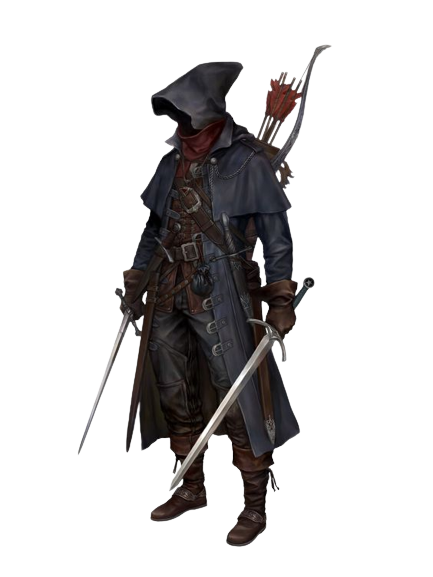Dado de Vida: 1d8 por nível de ladino
Pontos de Vida no 1° Nível: 8 + seu modificador de Constituição
Pontos de Vida nos Níveis Seguintes: 1d8 (ou 5) + seu modificador de Constituição por nível de ladino após o 1°.
Armaduras: Armaduras leves
Armas: Armas simples, bestas de mão, espadas longas, rapieiras, espadas curtas
Ferramentas: Ferramentas de ladrão
Testes de Resistência: Destreza, Inteligência
Perícias: Escolha quatro dentre Acrobacia, Atletismo, Atuação, Enganação, Furtividade, Intimidação, Intuição, Investigação, Percepção, Persuasão e Prestidigitação
Você começa com o seguinte equipamento, além do equipamento concedido pelo seu antecedente:
- (a) uma rapieira ou (b) uma espada longa
- (a) um arco curto e uma aljava com 20 flechas ou (b) uma espada curta
- (a) um pacote de assaltante ou (b) um pacote de aventureiro ou (c) um pacote de explorador
- Armadura de couro, duas adagas e ferramentas de ladrão
Monge
O Monge é uma classe ágil e disciplinada em Dungeons & Dragons, especializada em artes marciais e aprimoramento do corpo e mente. Com seus ataques desarmados e habilidades de movimento rápido, o Monge é capaz de desferir golpes precisos e evadir-se habilmente dos inimigos.
Características e Status do Monge: O Monge em Dungeons & Dragons é conhecido por suas habilidades marciais e disciplina interior. Com Destreza (DEX) como seu atributo mais usado, eles são ágeis e possuem uma ampla variedade de ataques desarmados. Além disso, os Monges são capazes de usar Ki para realizar proezas extraordinárias, como se curar e realizar ataques adicionais. Com pontos de vida moderados, eles dependem de sua velocidade e capacidade de esquiva para se manterem seguros durante as batalhas.
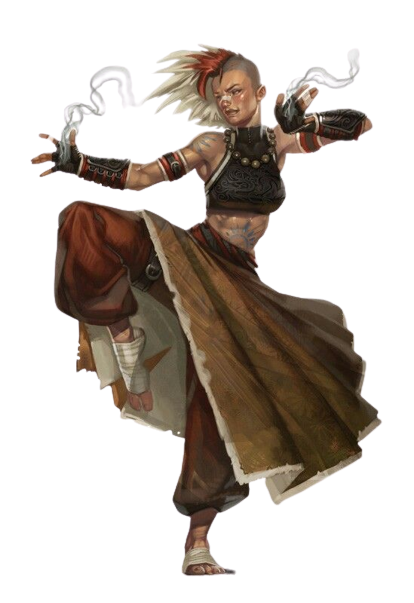Dado de Vida: 1d8 por nível de monge
Pontos de Vida no 1° Nível: 8 + seu modificador de Constituição
Pontos de Vida nos Níveis Seguintes: 1d8 (ou 5) + seu modificador de Constituição por nível de monge após o 1°.
Armaduras: Nenhuma
Armas: Armas simples, espadas curtas
Ferramentas: Escolha um tipo de ferramenta de artesão ou um instrumento musical
Testes de Resistência: Força, Destreza
Perícias: Escolha duas dentre Acrobacia, Atletismo, Furtividade, História, Intuição e Religião
Você começa com o seguinte equipamento, além do equipamento concedido pelo seu antecedente:
- (a) uma espada curta ou (b) qualquer arma simples
- (a) um pacote de explorador ou (b) um pacote de aventureiro
- 10 dardos
Bardo
O Bardo em Dungeons & Dragons é um mestre das artes performáticas e do conhecimento. Com suas habilidades musicais e versatilidade, o Bardo é capaz de inspirar aliados, lançar feitiços e manipular emoções. Sua presença encantadora e talento artístico são suas armas mais poderosas.
Características e Status do Bardo: O Bardo em Dungeons & Dragons é um artista versátil, com foco em . Sua habilidade mais usada, a , permite que eles concedam bônus de habilidade e dados de cura aos aliados. Além disso, os Bardos têm acesso a uma ampla gama de magias, bem como proficiência em diversas perícias. Com pontos de vida moderados, eles dependem de sua carisma e para influenciar e manipular situações em seu favor.
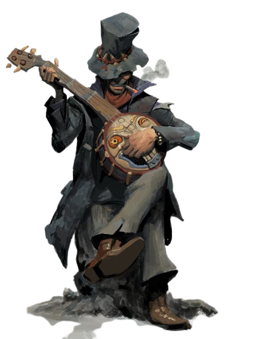Dado de Vida: 1d8 por nível de bardo
Pontos de Vida no 1° Nível: 8 + seu modificador de Constituição
Pontos de Vida nos Níveis Seguintes: 1d8 (ou 5) + seu modificador de Constituição por nível de bardo após o 1°.
Armaduras: Armaduras leves
Armas: Armas simples, bestas de mão, espadas longas, rapieiras, espadas curtas
Ferramentas: Três instrumentos musicais, à sua escolha
Testes de Resistência: Destreza, Carisma
Perícias: Escolha três quaisquer
Você começa com o seguinte equipamento, além do equipamento concedido pelo seu antecedente:
- (a) uma rapieira, (b) uma espada longa ou (c) qualquer arma simples
- (a) um pacote de diplomata ou (b) um pacote de artista
- (a) um lute ou (b) qualquer outro instrumento musical
- Armadura de couro e uma adaga
Bruxo
O Bruxo é um manipulador do oculto em Dungeons & Dragons, com pactos sombrios e poderes mágicos. Com sua conexão com entidades sobrenaturais, o Bruxo é capaz de lançar feitiços e invocar criaturas das trevas. Sua sede de conhecimento proibido e sua afinidade com o desconhecido são suas maiores motivações.
Características e Status do Bruxo: O Bruxo em Dungeons & Dragons é um mestre do oculto e da magia pactuada, com seu atributo mais usado sendo o Carisma (CAR). Com acesso a magias poderosas e invocações únicas, o Bruxo é capaz de conjurar habilidades e invocar servos sobrenaturais. Sua resistência mágica, pontos de vida moderados e a capacidade de recuperar feitiços durante descansos curtos o tornam um ser versátil e intrigante no campo de batalha.
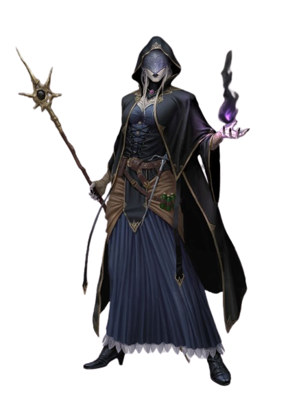Dado de Vida: 1d8 por nível de bruxo
Pontos de Vida no 1° Nível: 8 + seu modificador de Constituição
Pontos de Vida nos Níveis Seguintes: 1d8 (ou 5) + seu modificador de Constituição por nível de bruxo após o 1°.
Armaduras: Armaduras leves
Armas: Armas simples
Ferramentas: Nenhuma
Testes de Resistência: Sabedoria, Carisma
Perícias: Escolha duas entre Arcanismo, Enganação, História, Intimidação, Investigação, Natureza e Religião
Você começa com o seguinte equipamento, além do equipamento concedido pelo seu antecedente:
- (a) uma besta leve e 20 virotes ou (b) qualquer arma simples
- (a) uma bolsa de componentes ou (b) um foco arcano
- (a) um pacote de estudioso ou (b) um pacote de explorador
- Armadura de couro, qualquer arma simples e duas adagas
Bárbaro
O Bárbaro é uma força implacável em Dungeons & Dragons, um guerreiro feroz que canaliza sua fúria em combate. Com sua resistência e brutalidade, o Bárbaro é capaz de enfrentar desafios que outros não ousam. Sua conexão com a natureza e habilidades de combate desarmado são suas marcas registradas.
Características e Status do Bárbaro: O Bárbaro em Dungeons & Dragons é um combatente resistente e selvagem, com seu atributo mais usado sendo a . Com pontos de vida altos e a habilidade de entrar em um estado de , o Bárbaro é capaz de infligir danos devastadores aos inimigos. Além disso, eles possuem resistência a certos tipos de dano e . Sua conexão com a natureza e tornam o Bárbaro uma força formidável no campo de batalha.
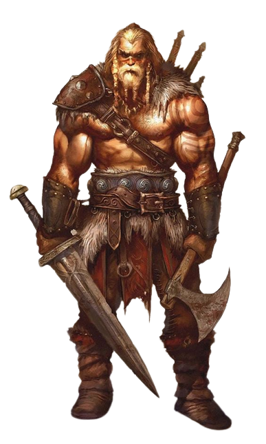Dado de Vida: 1d12 por nível de bárbaro
Pontos de Vida no 1° Nível: 12 + seu modificador de Constituição
Pontos de Vida nos Níveis Seguintes: 1d12 (ou 7) + seu modificador de Constituição por nível de bárbaro após o 1°.
Armaduras: Armaduras leves, armaduras médias e escudos
Armas: Armas simples, armas marciais
Ferramentas: Nenhuma
Testes de Resistência: Força, Constituição
Perícias: Escolha duas dentre Adestrar Animais, Atletismo, Intimidação, Natureza, Percepção e Sobrevivência
Você começa com o seguinte equipamento, além do equipamento concedido pelo seu antecedente:
- (a) um machado grande ou (b) qualquer arma marcial corpo-a-corpo
- (a) dois machados de mão ou (b) qualquer arma simples
- Um pacote de aventureiro e quatro azagaias
Clérigo
O Clérigo é um agente divino em Dungeons & Dragons, um canalizador de poderes sagrados e curativos. Com suas bênçãos divinas e capacidade de lançar magias de cura, o Clérigo é uma presença reconfortante em batalhas e na vida cotidiana. Sua devoção à sua divindade e habilidades de combate são suas principais características.
Características e Status do Clérigo: O Clérigo em Dungeons & Dragons é um servidor divino, com seu atributo mais usado sendo a Sabedoria (SAB). Com acesso a magias de cura e bênçãos divinas, o Clérigo desempenha um papel vital em manter a equipe viva e saudável. Além disso, eles podem canalizar energia divina para causar danos aos inimigos e possuem habilidades de proteção contra forças malignas. Sua devoção à sua divindade e capacidade de suporte fazem do Clérigo uma presença indispensável em qualquer grupo.
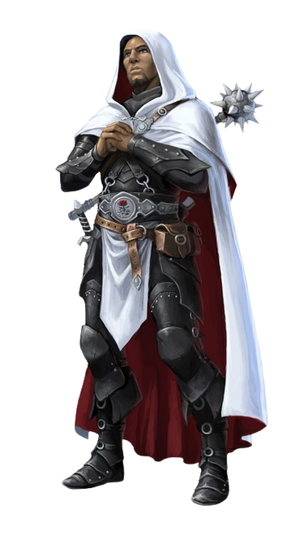Dado de Vida: 1d8 por nível de clérigo
Pontos de Vida no 1° Nível: 8 + seu modificador de Constituição
Pontos de Vida nos Níveis Seguintes: 1d8 (ou 5) + seu modificador de Constituição por nível de clérigo após o 1°.
Armaduras: Armaduras leves, armaduras médias, escudos
Armas: Todas as armas simples
Ferramentas: Nenhuma
Testes de Resistência: Sabedoria, Carisma
Perícias: Escolha duas dentre História, Intuição, Medicina, Persuasão e Religião
Você começa com o seguinte equipamento, além do equipamento concedido pelo seu antecedente:
- (a) uma maça ou (b) um martelo de guerra (se for proficiente)
- (a) brunea, (b) armadura de couro ou (c) cota de malha (se for proficiente)
- (a) um besta leve e 20 virotes ou (b) qualquer arma simples
- (a) um pacote de sacerdote ou (b) um pacote de aventureiro
- Um escudo e um símbolo sagrado
Feiticeiro
O Feiticeiro é um mestre da magia inata em Dungeons & Dragons, capaz de conjurar feitiços poderosos com base em sua linhagem mágica. Com sua conexão com o mundo arcano e habilidades sobrenaturais, o Feiticeiro é uma força imprevisível e poderosa. Sua capacidade de moldar a magia através de seu atributo mais usado, Carisma, é sua marca distintiva.
Características e Status do Feiticeiro: O Feiticeiro em Dungeons & Dragons é um usuário de magia inata, com seu atributo mais usado sendo o Carisma (CAR). Com sua capacidade de conjurar feitiços poderosos e únicos, o Feiticeiro se destaca como um lançador de magias versátil. Sua linhagem mágica determina suas habilidades especiais, como feitiços metamágicos, permitindo que modifiquem e amplifiquem suas magias. Com seu domínio natural da magia, o Feiticeiro é uma força mágica a ser temida e respeitada.
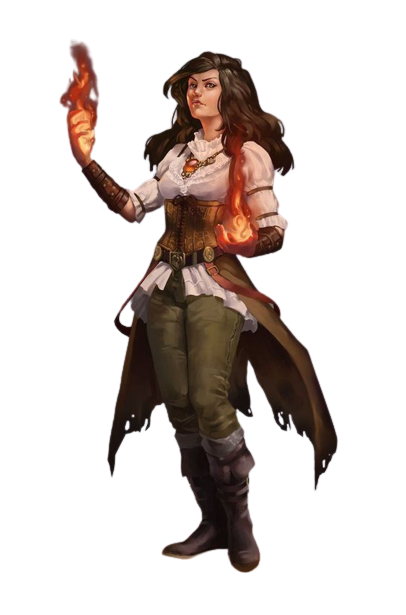Dado de Vida: 1d6 por nível de feiticeiro
Pontos de Vida no 1° Nível: 6 + seu modificador de Constituição
Pontos de Vida nos Níveis Seguintes: 1d8 (ou 4) + seu modificador de Constituição por nível de feiticeiro após o 1°.
Armaduras: Nenhuma
Armas: Adagas, dardos, fundas, bordões e bestas leves
Ferramentas: Nenhuma
Testes de Resistência: Constituição, Carisma
Perícias: Escolha duas dentre Arcanismo, Enganação, Intuição, Intimidação, Persuasão e Religião
Você começa com o seguinte equipamento, além do equipamento concedido pelo seu antecedente:
- (a) uma besta leve e 20 virotes ou (b) qualquer arma simples
- (a) uma bolsa de componentes ou (b) um foco arcano
- (a) um pacote de explorador ou (b) um pacote de aventureiro
Paladino
O Paladino em Dungeons & Dragons é um cavaleiro divino, um defensor da justiça e da retidão. Com suas habilidades marciais e poderes sagrados, o Paladino é uma força imponente no campo de batalha. Sua devoção a um código de conduta e sua capacidade de canalizar energia divina são suas características distintivas.
Características e Status do Paladino: O Paladino em Dungeons & Dragons é um guerreiro divino com seu atributo mais usado sendo a Força (FOR). Com seu juramento sagrado e habilidades de combate, o Paladino é um defensor feroz da justiça. Além disso, eles possuem a capacidade de curar aliados e invocar poderes divinos para enfrentar o mal.
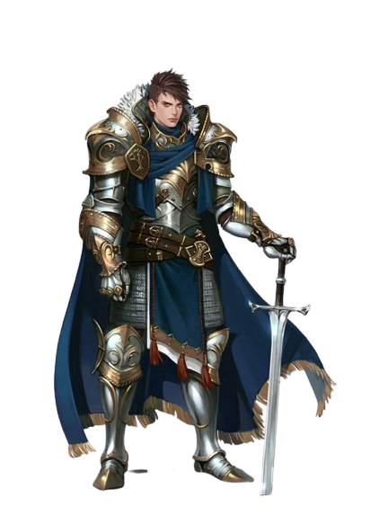Dado de Vida: 1d10 por nível de paladino
Pontos de Vida no 1° Nível: 10 + seu modificador de Constituição
Pontos de Vida nos Níveis Seguintes: 1d10 (ou 6) + seu modificador de Constituição por nível de paladino após o 1°.
Armaduras: Todas as armaduras, escudos
Armas: Armas simples, armas marciais.
Ferramentas: Nenhuma
Testes de Resistência: : Sabedoria, Carisma
Perícias: Escolha duas dentre Atletismo, Intuição, Intimidação, Medicina, Persuasão e Religião
Você começa com o seguinte equipamento, além do equipamento concedido pelo seu antecedente:
- (a) uma arma marcial e um escudo ou (b) duas armas marciais
- (a) cinco azagaias ou (b) qualquer arma simples corpoa-corpo
- (a) um pacote de sacerdote ou (b) um pacote de aventureiro
- Cota de malha e um símbolo sagrado
Patrulheiro
O Patrulheiro em Dungeons & Dragons é um especialista em sobrevivência e caça, com habilidades de rastreamento e conhecimento da natureza. Com sua conexão com o mundo natural e suas habilidades de combate precisas, o Patrulheiro é um explorador versátil e um guardião dos reinos selvagens.
Características e Status do Patrulheiro: O Patrulheiro em Dungeons & Dragons é um especialista em sobrevivência e caça, com seu atributo mais usado sendo a Destreza (DEX). Com suas habilidades de rastreamento e combate ágil, o Patrulheiro é um mestre da natureza. Sua conexão com o mundo natural lhe concede conhecimentos únicos e capacidades de enfrentar os desafios da vida selvagem.
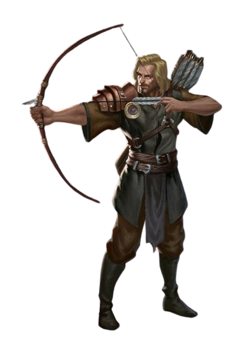Dado de Vida: 1d10 por nível de patrulheiro
Pontos de Vida no 1° Nível: 10 + seu modificador de Constituição
Pontos de Vida nos Níveis Seguintes: 1d8 (ou 6) + seu modificador de Constituição por nível de patrulheiro após o 1°.
Armaduras: Armaduras leves, armaduras médias, escudos
Armas: Armas simples, armas marciais
Ferramentas: Nenhuma
Testes de Resistência: Força, Destreza
Perícias: Escolha três dentre Acrobacia, Adestrar Animais, Atletismo, Furtividade, Intuição, Investigação, Natureza, Percepção e Sobrevivência
Você começa com o seguinte equipamento, além do equipamento concedido pelo seu antecedente:
- (a) camisão de malha ou (b) armadura de couro
- (a) duas espadas curtas ou (b) duas armas simples corpo-a-corpo
- (a) um pacote de explorador ou (b) um pacote de aventureiro
- Um arco longo e uma aljava com 20 flechas